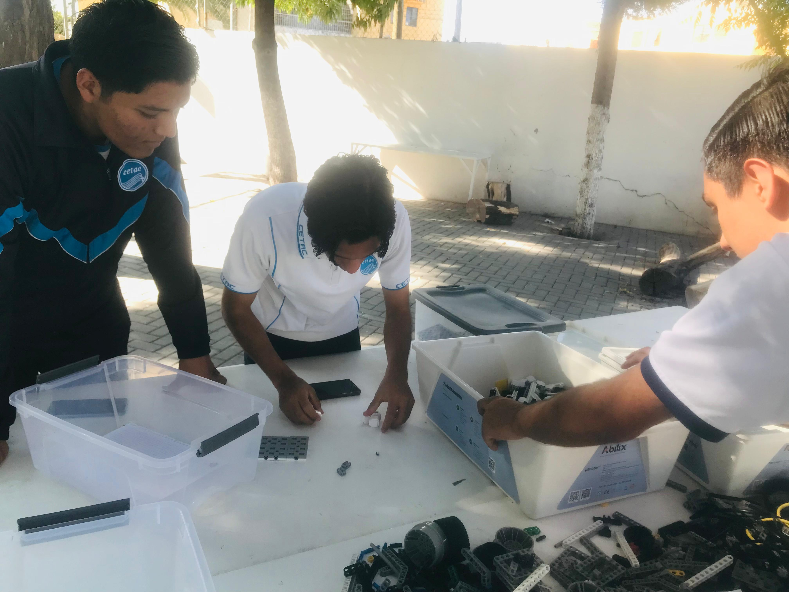
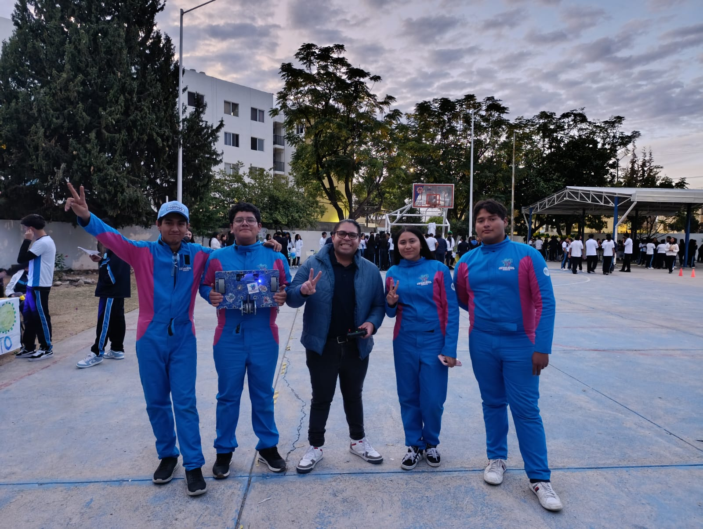
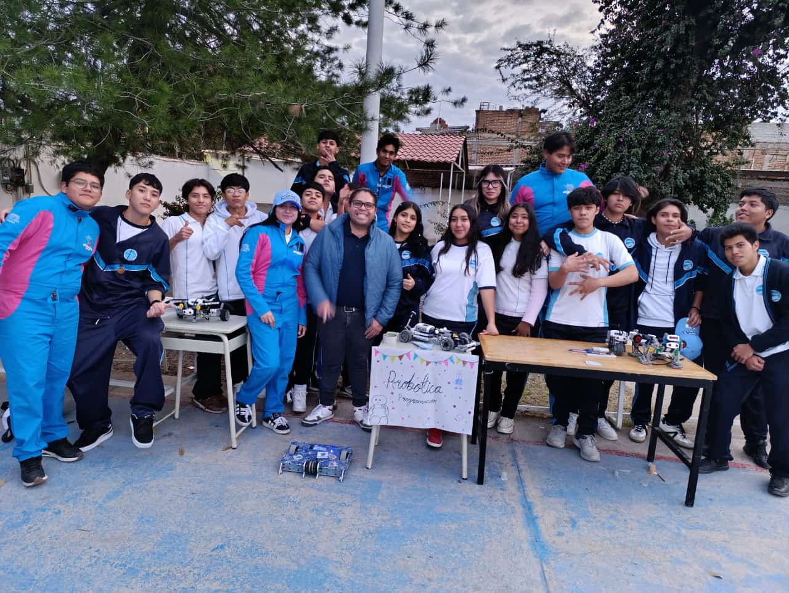

Muchas gracias por habernos acompañado en la feria de carreras el dia 13 de enero
De manera de agradecimiento quisiéramos compartirles el proceso y como fue nuestra perspectiva al estar con ustedes

Muchas gracias por habernos acompañado en la feria de carreras el dia 13 de enero
De manera de agradecimiento quisiéramos compartirles el proceso y como fue nuestra perspectiva al estar con ustedes
Para iniciar les daremos una breve introducción por el conductor del equipo de cetáceos
Aquí les dejamos prototipos que lamentablemente no pudimos mostrarles a ustedes pero queremos que los aprecien en este momento
Acompáñenos a poder ver el proceso de armado de los prototipos que ustedes pudieron apreciar en presencial
Por ultimo quisiéramos mostrar un poco de como fue el estar con ustedes
Nuestras dinámicas fueron pequeños retos que ustedes en algún momento tendrán si es que decide entrar con nosotros y queríamos que tuvieran la experiencia necesaria y que vean que no es una carrera difícil
Fue un placer estar con ustedes y nos alegra que nos acompañaran, los esperamos con un gran abrazo el proximo semestre dentro de la carrera de programación
